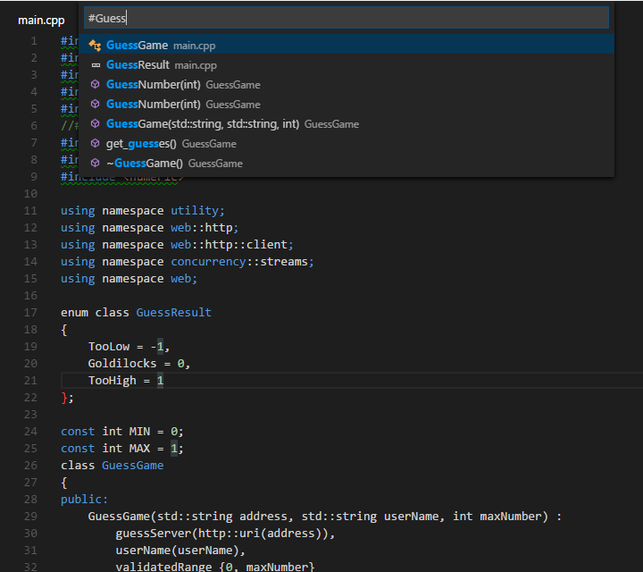

C/C++ for VS Code (Preview)
C/C++ support for Visual Studio Code is provided by a Microsoft C/C++ extension to enable cross-platform C and C++ development using VS Code on Windows, Linux, and macOS. The extension is still in preview and our focus is code editing, navigation, and debugging support for C and C++ code everywhere that VS Code runs.
If you just want a lightweight tool to edit your C++ files, Visual Studio Code is a great choice but if you want the best possible experience for your existing Visual C++ projects or debugging on Windows, we recommend you use a version of Visual Studio such as Visual Studio Community.
If you run into any issues or have suggestions for the Microsoft C/C++ extension, please file issues and suggestions on GitHub. If you haven’t already provided feedback, please take this quick survey to help shape this extension for your needs.
Note for Linux users: The C/C++ extension works on 64-bit Linux distros that have glibc 2.18 or later installed.
Getting Started
To install the Microsoft C/C++ extension:
- Open VS Code.
- Click the Extensions View icon on the Sidebar.
- Search for
c++. - Click Install, then click Reload.
With the C/C++ extension installed, open a folder that
contains your C/C++ source code. VS Code will place various
settings files into a .vscode subfolder.
Note: The C/C++ extension does not include a C++ compiler or debugger. You will need to install these tools or use those already installed on your computer. Popular C++ compilers are MinGW for Windows, XCode for macOS, and GCC on Linux. Also make sure your compiler executable is on your platform path for VS Code to find.
IntelliSense
To enable code completion and navigation, you will need to
generate a c_cpp_properties.json file:
- Find any green squiggle in a source file (for example, an #include statement) and set the cursor on the line.
- Click the lightbulb that appears in the left gutter.
- Click Update "browse.path" setting.
This will generate a c_cpp_properties.json file
that allows you to add additional browse paths to properly
enable code navigation and auto-completion. The generated
c_cpp_properties.json file has sections for
different operating systems, make sure you update the
appropriate settings for your current platform.
Below you can see that the MinGW C++ include path has been
added to browse.path for Windows:
{
"name": "Win32",
"includePath": [
"${workspaceRoot}"
],
"defines": [
"_DEBUG",
"UNICODE"
],
"intelliSenseMode": "msvc-x64",
"browse": {
"path": [
"${workspaceRoot}",
"C:\\MinGW\\lib\\gcc\\mingw32\\6.3.0\\include\\c++"
],
"limitSymbolsToIncludedHeaders": true,
"databaseFilename": ""
}
}
Note: You can also generate or edit a
c_cpp_properties.jsonfile with the C/Cpp: Edit Configurations command from the Command Palette (kb(workbench.action.showCommands)).
Building your code
If you want to build your application from VS Code, you
will need to generate a
tasks.json file:
-
Open the
Command Palette
(
kb(workbench.action.showCommands)). - Select the Tasks: Configure Task Runner command and you will see a list of task runner templates.
- Select Others to create a task which runs an external command.
-
Change the
commandto the command line expression you use to build your application (for exampleg++). -
Add any required args (for example
-gto build for debugging). -
You can also change the
taskNameto be more descriptive.
You should now see a tasks.json file in your
workspace .vscode folder that looks something
like:
{
"version": "2.0.0",
"tasks": [
{
"taskName": "build hello world",
"type": "shell",
"command": "g++",
"args": [
"-g", "helloworld.cpp"
]
}
]
}
If you'd like to be able to build your application with
Tasks: Run Build Task
(kb(workbench.action.tasks.build)), you can add
it to the build group.
{
"version": "2.0.0",
"tasks": [
{
"taskName": "build hello world",
"type": "shell",
"command": "g++",
"args": [
"-g", "helloworld.cpp"
],
"group": {
"kind": "build",
"isDefault": true
}
}
]
}
For more information on tasks, see Integrate with External Tools via Tasks.
Debugging your code
To enable debugging, you will need to generate a
launch.json file:
- Navigate to the Debug view by clicking the Debug icon in the Sidebar.
- In the Debug view, click the Configure icon.
-
Select
C++ (GDB/LLDB)(to use GDB or LLDB) orC++ (Windows)(to use the Visual Studio Windows Debugger) from the Select Environment dropdown. This creates alaunch.jsonfile for editing with two configurations: - C++ Launch defines the properties for launching your application when you start debugging.
- C++ Attach defines the properties for attaching to a process that's already running.
-
Update the
programproperty with the path to the program you are debugging. -
If you want your application to build when you start
debugging, add a
preLaunchTaskproperty with the name of the build task you created intasks.json("build hello world" in the example above).
Below is an example using the MinGW GDB debugger:
{
"version": "0.2.0",
"configurations": [
{
"name": "(gdb) Launch",
"type": "cppdbg",
"request": "launch",
"program": "${workspaceRoot}/a.exe",
"args": [],
"stopAtEntry": false,
"cwd": "${workspaceRoot}",
"environment": [],
"externalConsole": true,
"MIMode": "gdb",
"miDebuggerPath": "C:\\mingw\\bin\\gdb.exe",
"setupCommands": [
{
"description": "Enable pretty-printing for gdb",
"text": "-enable-pretty-printing",
"ignoreFailures": true
}
],
"preLaunchTask": "build hello world"
}
]
}
To learn more, see Configuring launch.json for C/C++ debugging.
If you are debugging with GDB on Windows, see Windows Debugging with GDB.
Editing Code
Code Formatting
The C/C++ extension for Visual Studio Code supports source code formatting using clang-format which is included with the extension.
You can format an entire file with
Format Document
(kb(editor.action.formatDocument)) or just the
current selection with
Format Selection
(kb(editor.action.formatSelection)) in
right-click context menu. You can also configure
auto-formatting with the following
settings:
-
C_Cpp.clang_format_formatOnSave- to format when you save your file. -
editor.formatOnType- to format as you type (triggered on thekbstyle(;)character).
By default, the clang-format style is set to "file" which
means it looks for a .clang-format file inside
your workspace. If the .clang-format file is
found, formatting is applied according to the settings
specified in the file. If no .clang-format file
is found in your workspace, formatting is applied based on a
default style specified in the
C_Cpp.clang_format_fallbackStyle
setting
instead. Currently, the default formatting style is "Visual
Studio". Using "Visual Studio" formatting ensures that source
code formatting will be compatible in both VS Code and Visual
Studio Community.
The "Visual Studio" clang-format style is not yet an official OOTB clang-format style but it implies the following clang-format settings:
UseTab: (VS Code current setting)
IndentWidth: (VS Code current setting)
BreakBeforeBraces: AllMan
AllowShortIfStatementsOnASingleLine: false
IndentCaseLabels: false
ColumnLimit: 0
If you'd like to use a different version of clang-format than
the one that ships with the extension, you can use the
C_Cpp.clang_format_path
setting
and set its value to the path where the clang-format binary is
installed.
For example on the Windows platform:
"C_Cpp.clang_format_path": "C:\\Program Files (x86)\\LLVM\\bin\\clang-format.exe"
Fuzzy Auto-Complete
Fuzzy auto-complete is powered by an enhanced tag-parser approach. Although suggestions are not based on semantic analysis of your code, this feature provides a wider selection of matches than the single-file IntelliSense experience provided today.
In particular, this feature's capabilities give a good experience for C code.
Navigating Code
The source code navigation features provided by the C/C++ extension are powerful tools for understanding and getting around in your codebase. These features are powered by tags stored in an offline database of symbol information. With the C/C++ extension installed, this database is generated whenever a folder containing C++ source code files is loaded into VS Code. The platform indicator (Win32 in the figure below) turns red and appears next to a flame icon while the tag-parser is generating this information.
When the platform indicator returns to its normal appearance, the source code symbols have been tagged in the offline database and source code navigation features are ready to be used.
Specifying Additional Include Directories for Better Symbol Support
To provide the best experience, the C/C++ extension for VS Code needs to know where it can find each header file referenced in your code. By default, the extension searches the current source directory, its sub-directories, and some platform-specific locations. If a referenced header file can't be found, VS Code displays a green squiggle underneath each #include directive that references it.
To specify additional include directories to be searched,
place your cursor over any #include directive that displays a
green squiggle, then click the lightbulb action when it
appears. This opens the file
c_cpp_properties.json for editing; here you can
specify additional include directories for each platform
configuration individually by adding more directories to its
'includePath' property.
Search for Symbols
You can search for symbols in the current file or workspace to navigate your code more quickly.
To search for a symbol in the current file, press
kb(workbench.action.gotoSymbol), then enter the
name of the symbol you're looking for. A list of potential
matches will appear and be filtered as you type. Choose from
the list of matches to navigate to its location.

To search for a symbol in the current workspace, start by
pressing
kb(workbench.action.showAllSymbols) instead, then
enter the name of the symbol. A list of potential matches will
appear as before. If you choose a match that was found in a
file that's not already open, the file will be opened before
navigating to the match's location.

Alternatively, you can search for symbols by accessing these
commands through the Command Palette if you
prefer. Use
Quick Open
(kb(workbench.action.quickOpen)) then enter the
'@' command to search the current file, or the '#' command to
search the current workspace.
kb(workbench.action.gotoSymbol) and
kb(workbench.action.showAllSymbols) are just
shortcuts for the '@' and '#' commands, respectively, so
everything works the same.
Peek Definition
You can take a quick look at how a symbol was defined by using the Peek Definition feature. This feature displays a few lines of code near the definition inside a peek window so you can take a look without navigating away from your current location.
To peek at a symbol's definition, place your cursor on the
symbol anywhere it's used in your source code and then press
kb(editor.action.previewDeclaration).
Alternatively, you can choose
Peek Definition from the context menu
(right-click, then choose Peek Definition).

Currently, the C/C++ extension doesn't parse code in a way that helps it distinguish between competing definitions based on how the symbol is used. These competing definitions arise when the symbol defines different things in different contexts, such as occurs with overloaded functions, classes and their constructors, and other situations. When this happens, each of the competing definitions are listed in the right-hand side of the peek window with the source code of the current selection displayed on the left.
With the peek window open, you browse the list of competing definitions to find the one you're interested in. If you want to navigate to the location of one of the definitions just double-click the definition you're interested in, or by double-clicking anywhere in the source code displayed on the left-hand side of the peek window.
Go to Definition
You can also quickly navigate to where a symbol is defined by using the Go to Definition feature.
To go to a symbol's definition, place your cursor on the
symbol anywhere its used in your code and then press
kb(editor.action.goToDeclaration). Alternatively,
you can choose Go to Definition from the
context menu (right-click, then choose
Go to Definition). When there's only one
definition of the symbol, you'll navigate directly to its
location, otherwise the competing definitions are displayed in
a peek window as described in the previous section and you
have to choose the definition that you want to go to.
Debugging
After you have set up the basics of your debugging environment as specified in Getting Started, you can learn more details about debugging C/C++ in this section.
VS Code supports the following debuggers for C/C++ depending on the operating system you are using:
- Linux: GDB
- macOS: LLDB or GDB
- Windows: the Visual Studio Windows Debugger or GDB (using Cygwin or MinGW)
Windows Debugging with GDB
You can debug Windows applications created using Cygwin or
MinGW by using VS Code. To use Cygwin or MinGW debugging
features, the debugger path must be set manually in the launch
configuration (launch.json). To debug your Cygwin
or MinGW application, add the
miDebuggerPath property and set its value to the
location of the corresponding gdb.exe for your Cygwin or MinGW
environment.
For example:
"miDebuggerPath": "c:\\mingw\\bin\\gdb.exe"
Cygwin/MinGW debugging on Windows supports both attach and launch debugging scenarios.
Conditional Breakpoints
Conditional breakpoints enable you to break execution on a particular line of code only when the value of the condition is true. To set a conditional breakpoint, right-click on an existing breakpoint and select Edit Breakpoint. This opens a small peek window where you can enter the condition that must evaluate to true in order for the breakpoint to be hit during debugging.

In the editor, conditional breakpoints are indicated by a breakpoint symbol that has a black equals sign inside of it. You can place the cursor over a conditional breakpoint to show its condition.
Function Breakpoints
Function breakpoints enable you to break execution at the beginning of a function instead of on a particular line of code. To set a function breakpoint, on the Debug pane right-click inside the Breakpoints section, then choose Add Function Breakpoint and enter the name of the function on which you want to break execution.
Expression Evaluation
VS Code supports expression evaluation in several contexts:
- You can type an expression into the Watch section of the Debug panel and it will be evaluated each time a breakpoint is hit.
- You can type an expression into the Debug Console and it will be evaluated only once.
- You can evaluate any expression that appears in your code while you're stopped at a breakpoint.
Note that expressions in the Watch section take effect in the application being debugged; an expression that modifies the value of a variable will modify that variable for the duration of the program.
Multi-threaded Debugging
The C/C++ extension for VS Code has the ability to debug multi-threaded programs. All threads and their call stacks appear in the Call Stack section:

Memory Dump Debugging
The C/C++ extension for VS Code also has the ability to debug
memory dumps. To debug a memory dump, open your
launch.json file and add the
coreDumpPath (for GDB or LLDB) or
dumpPath (for the Visual Studio Windows Debugger)
property to the C++ Launch configuration, set
its value to be a string containing the path to the memory
dump. This will even work for x86 programs being debugged on
an x64 machine.
Additional Symbols
If there are additional directories where the debugger can
find symbol files (for example, .pdb files for
the Visual Studio Windows Debugger), they can be specified by
adding the additionalSOLibSearchPath (for GDB or
LLDB) or symbolSearchPath (for the Visual Studio
Windows Debugger).
For example:
"additionalSOLibSearchPath": "/path/to/symbols;/another/path/to/symbols"
or
"symbolSearchPath": "C:\\path\\to\\symbols;C:\\another\\path\\to\\symbols"
Locate source files
The source file location can be changed if the source files
are not located in the compilation location. This is done by
simple replacement pairs added in the
sourceFileMap section. The first match in this
list will be used.
For example:
"sourceFileMap": {
"/build/gcc-4.8-fNUjSI/gcc-4.8-4.8.4/build/i686-linux-gnu/libstdc++-v3/include/i686-linux-gnu": "/usr/include/i686-linux-gnu/c++/4.8",
"/build/gcc-4.8-fNUjSI/gcc-4.8-4.8.4/build/i686-linux-gnu/libstdc++-v3/include": "/usr/include/c++/4.8"
}
GDB, LLDB and MI Commands (GDB/LLDB)
For the C++ (GDB/LLDB) debugging environment, you
can execute GDB, LLDB and MI commands directly through the
debug console with the -exec command, but be
careful, executing commands directly in the debug console is
untested and might crash VS Code in some cases.
Other Debugging Features
- Unconditional breakpoints
- Watch window
- Call stack
- Stepping
For more information on debugging with VS Code, see this introduction to debugging in VS Code.
Known Limitations
Symbols and Code Navigation
All platforms:
- Because the extension doesn't parse function bodies, Peek Definition and Go to Definition don't work for symbols defined inside the body of a function.
Debugging
Windows:
-
GDB on Cygwin and MinGW cannot break a running process. To
set a breakpoint when the application is running (not
stopped under the debugger), or to pause the application
being debugged, press
kbstyle(Ctrl-C)in the application's terminal. - GDB on Cygwin cannot open core dumps.
Linux:
- GDB needs elevated permissions to attach to a process. When using attach to process, you need to provide your password before the debugging session can begin.
macOS:
-
LLDB:
- When debugging with LLDB, if the Terminal window is closed while in break mode, debugging does not stop. Debugging can be stopped by pressing the Stop button.
- When debugging is stopped the Terminal window is not closed.
-
GDB:
- Additional manual install steps need to be completed to use GDB on macOS. See Manual Installation of GDB for OS X in the README.
- When attaching to a process with GDB, the application being debugged cannot be interrupted. GDB will only bind breakpoints set while the application is not running (either before attaching to the application, or while the application is in a stopped state). This is due to a bug in GDB.
- Core dumps cannot be loaded when debugging with GDB because GDB does not support the core dump format used in macOS.
- When attached to a process with GDB, break-all will end the process.
Next Steps
Read on to find out about:
- Basic Editing - Learn about the powerful VS Code editor.
- Code Navigation - Move quickly through your source code.
- Tasks - use tasks to build your project and more
- Debugging - find out how to use the debugger with your project
Common Questions
Q: My project won't load.
A: VS Code doesn't currently support C++ project files, instead it considers a directory of your choosing to be the workspace of your project. Source code files inside that directory and its sub-directories are part of the workspace.
Q: How do I build/run my project?
A: VS Code supports tasks that you can configure to build your application, and natively understands the output of MSBuild, CSC, and XBuild. For more information, see the Tasks documentation.
If you have any other questions or run into any issues, please file an issue on GitHub.